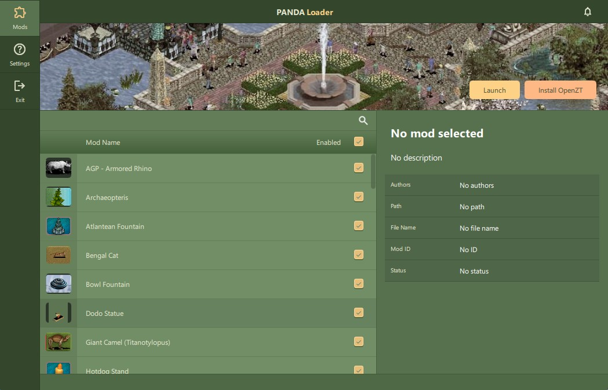

PANDA (Project and Animal) Loader is a mod loader for Zoo Tycoon that lets users manage and install mods easily. It also functions as the main GUI for the OpenZT API, letting users enable scripting and other OpenZT features.

At the moment, PANDA does not have a binary installer. To install PANDA, you will need to compile it from source. You can find the source code on the PANDA GitHub repository.
All dependencies are included in the repository with exception for MingW, which you will need to install separately. The project uses Qt 6.8.1 which includes this version of MingW by default. You can find the Qt installer here.
PANDA currently only targets Windows, so you will need Powershell to run the build script. Replace the following flags with your respective paths to gcc, g++, and mingw_64.
cmake -G "Ninja" `
-DCMAKE_C_COMPILER="F:/QT/Tools/mingw1310_64/bin/gcc.exe" `
-DCMAKE_CXX_COMPILER="F:/QT/Tools/mingw1310_64/bin/g++.exe" `
-DCMAKE_PREFIX_PATH="F:/QT/6.8.1/mingw_64" `
-S . -B ./build
After running the above command, you can run the build script to compile PANDA. The output will be in the build directory. Qt still needs all dependencies to be installed, so you will need to run the following command to install them:
windeployqt
This will copy all the necessary DLLs to the build directory. You can then run PANDA from the build directory or copy the contents to a preferred location.
On first load, PANDA will create a directory in ~/<your name>/.panda where it will store all settings and mod data. Here